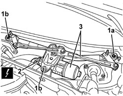

5050B38 WINDSCREEN WIPER ASSEMBLY - R+R OR REPAIR
- Path
- Procedures > 50 AUXILIARY UNITS > 5050 SCREEN WASHERS AND HEADLAMP WASH/WIPE > 5050B WINDSCREEN WASH/WIPE > 5050B38 WINDSCREEN WIPER ASSEMBLY - R+R OR REPAIR
- Kind
- repair procedure (removal / refitting; the operation number is the code)
- Applies to
- all engines; all production periods
- Interactive page
- https://sloeber94.github.io/elrnDB-aBrrSpdr/en/#/946002306
Applies to: all engines; all production periods
 Removing
Removing
 Refitting
RefittingOp. 5050B34 WINDSCREEN WIPER ARM/S COMPLETE WITH BLADE - R+R
Op. 7025A64 ENGINE COMPARTMENT GASKET - R.R.
Op. 7210E22 R.R. WINDSCREEN BASE TRIM
1. Undo the nut (1a) and the bolts (1b).
2. Disconnect the electrical connection for the windscreen wiper motor.
Description | Component |
|---|---|
WINDSCREEN WIPER MOTOR |
3. Remove the windscreen wiper assembly.

Applies to: all engines; all production periods
Refitting
Removing- Check that the windscreen wiper assembly is not damaged.
- Remove the fan assembly.
- Connect the electrical connection for the windscreen wiper motor.
- Tighten the nut and the bolts.
Component | Fastening | dia | Value (daNm) | Validity |
|---|---|---|---|---|
FRONT WINDSCREEN WIPER ASSEMBLY | Bolt | M6x30 | 0.7 ÷ 1.1 |
Component | Fastening | dia | Value (daNm) | Validity |
|---|---|---|---|---|
FRONT WINDSCREEN WIPER ASSEMBLY | Nut | M6 | 0.7 ÷ 1.1 |
Op. 7210E22 R.R. WINDSCREEN BASE TRIM
Op. 7025A64 ENGINE COMPARTMENT GASKET - R.R.
Op. 5050B34 WINDSCREEN WIPER ARM/S COMPLETE WITH BLADE - R+R
Topics linked from this page (4)
- 5050B34 WINDSCREEN WIPER ARM/S COMPLETE WITH BLADE - R+R
- 7025A64 ENGINE COMPARTMENT GASKET - R.R.
- 7210E22 R.R. WINDSCREEN BASE TRIM
- N015 WINDSCREEN WIPER MOTOR
Topics that link to this page (17)
- S058 WINDSCREEN WIPER NOISY
- 1820B21 MASTER CYLINDER (PUMP) - R R FOR RIGHT HAND DRIVE VERSIONS
- 3330B02 PEDAL ASSEMBLY - R.R
- 3330B23 BRAKE PEDAL - R.R. FOR RIGHT HAND DRIVE VERSIONS
- 3330B27 CLUTCH PEDAL - R.R. FOR RIGHT HAND DRIVE VERSIONS
- 3330B42 PEDAL UNIT SUPPORT - R.R. FOR RIGHT HAND DRIVE VERSIONS
- 3330D18 BRAKE SERVO R R FOR RIGHT HAND DRRIVE VERSIONS
- 5040C10 AIR CONDITIONING CASING - R.R
- 5040C50 AIR CONDITIONING HEATER RADIATOR - R.R.
- 5040C64 A/C EVAPORATOR - R+R
- 5040D80 AIR CONDITIONING SYSTEM CABLE LOOM - R.R. OR REPLACE
- 5040D86 AIR CONDITIONING RIGHT AIR MIXTURE FLAP CONTROL MOTOR - R.R
- 5040D94 AIR CONDITIONING LEFT UPPER AIR DISTRIBUTION FLAP MOTOR (DEFROST) - R.R
- 5040D96 AIR CONDITIONING RIGHT UPPER DISTRIBUTION FLAP MOTOR (DEFROST) - R.R
- 5050B42 WINDSCREEN WIPER MOTOR - R+R
- 5505C31 BUILT-IN WIRING UNDER DASHBOARD - R.R.
- 7210A74 R R FACIA SUPPORT BEAM